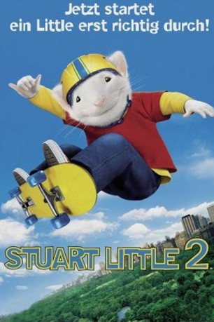

#6302 Stuart Little 2
 
 IMDB-Wertung: 5.4 / 10
IMDB-Wertung: 5.4 / 10  Tomatometer: 81
Tomatometer: 81  Metascore: 0
Metascore: 0 
Der Mäuserich Stuart lebt immer noch glücklich bei der Familie Little. Neben der neun Monate alten Martha hat die Familie noch weiteren Zuwachs bekommen, nämlich die Vogeldame Margalo, die Stuart aus den Klauen eines Falken gerettet hat. Eines Tages aber verschwindet Margalo auf mysteriöse Weise, woraufhin der Nager sich auf die Suche nach ihr macht. Dabei muß er sich abenteuerlichen Herausforderungen stellen und lernt, wie wichtig Familie, Freundschaft und Vertrauen sind.
Jahr: 2002
Dauer: 77 Minuten
FSK: 0
Land: USA Studio: Columbia PicturesTonspuren: DD5.1 - ,
Untertitel: Deutsch,
Auflösung: 1080p (1920x1040) Größe: 8325 MB
Genre: Komödie, Abenteuer, Fantasy, Animation/Trick, Familie
Regisseur: Rob Minkoff
Drehbuch: Gô Nagai
Soundtrack:
Darsteller:
 Michael J. Fox als Stuart Little
Michael J. Fox als Stuart Little Geena Davis als Mrs. Little
Geena Davis als Mrs. Little Hugh Laurie als Mr. Little
Hugh Laurie als Mr. Little Jonathan Lipnicki als George Little
Jonathan Lipnicki als George Little Nathan Lane als Snowbell
Nathan Lane als Snowbell Melanie Griffith als Margalo
Melanie Griffith als Margalo James Woods als Falcon
James Woods als Falcon Steve Zahn als Monty
Steve Zahn als Monty Marc John Jefferies als Will
Marc John Jefferies als Will Brad Garrett als Plumber
Brad Garrett als Plumber- Conan McCarty als Referee
- Maria Bamford als Teacher
- Daniel Hansen als Student
- Dyllan Christopher als Kid
 Raymond Ma als Chef
Raymond Ma als Chef- Amelia Marshall als Will's Mom
- Ronobir Lahiri als Cab Driver
 Rachael Harris als Additional Voices
Rachael Harris als Additional Voices Greg Bronson als Upscale Pedestrian , uncredited
Greg Bronson als Upscale Pedestrian , uncredited- Robert Harriell als Blader , uncredited
- Anna Hoelck als Martha Little
- Ashley Hoelck als Martha Little
- Angelo Massagli als Wallace
- Jim Doughan als Soccerball Coach
- Kevin Olson als Irwin
- Bobby Walsh als Tony
- Michael C. Fuchs als Mark
- Connie Roderick als Catholic Nun in Park
- David Tabatsky als Balloon Man
- Frank Aquilino als Onlooker
- Salvatore Pate als Onlooker
Datei: X:\3-Trilogie(N-Z)\Stuart Little\Stuart Little 2 (2002, FSK0, 1920x1040).mkv seit 06.06.2017
Festplatte: HD Collection-3(N-Z)-6(A-Z)
 Alle Filme aus Gruppe '3-Trilogie(N-Z)\Stuart Little'
Alle Filme aus Gruppe '3-Trilogie(N-Z)\Stuart Little'